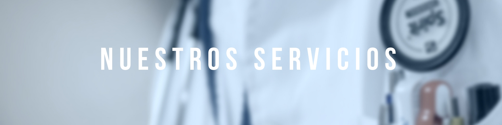
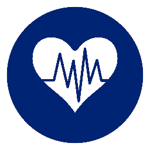

SEDE PRINCIPAL
CARRERA 13 # 24-51 MONTERÍA
CORREO DE CONTACTO
PORTUSALUDYPREVENCION@GMAIL.COM


Nuestros Servicios
 Consulta Médica General: Sesión personalizada entre el médico y el paciente ambulatorio de la consulta externa.
Comprende: exámen físico clínico completo de este, impresión diagnóstica, prescripción de laboratorios y/o medicamentos, remisión e interconsultas con especialistas. Su duración es de veinte (20) minutos.
Consulta Médica Especializada: Consulta programada en sesión personalizada entre los especialistas y los pacientes con enfermedas que requiera tratamiento médico de acuerdo a la patología y a la especialidad.
- Medicina Interna
- Ortopedia
- Cirugía General
- Psiquiatría
- Hematología
- Pediatría
- Ginecología
Horarios:
08:00 am a 12:00 pm y 02:00 pm a 06:00 pm
Exámenes de Laboratorio: Entre los exámenes de laboratorio que realizamos tenemos:
- Glicemia
- Colesterol
- Triglicéridos
- Colesterol HDL
- Colesterol LDL
- Colesterol VLDL
- Ácido úrico
- Urea
- Bun Creatinina
- Hemogramas completos
- Hemoclasificaciones
- Coombs Directo Indirecto
- Siklemia
- Reticulositos
- Prueba de coagulación (PT-TPT) INR
- Parcial de orina
- Coprológico Simple/Seriado/Dirigido
- Frotis vaginal
- KOH
- Citología
Electrocardiograma Se ofrece a usuarios ambulatorios con enfermedades cardiovasculares como servicios de apoyo al diagnóstico, incluye realización e interpretación
Imágenes Diagnósticas: Servicio que presta apoyo asistencial a los servicios ambulatorios que consisten en el paso de un rayo a través de un foco, su diseño consta de un área de procesamiento con un adecuado blindaje en lámina de plomo para la protección contra las radiaciones ionizantes, cuarto oscuro para el revelado y vestier.
Radiología:
- Extremidades superiores e inferiores
- Pelvis
- Cráneo, cara y cuello
- Columna vertebral
- Tórax abdomen simple
- Urografía intravenosa
- Colón por enema
Ultrasonografía:
- Ecografía obstétrica
- Perfil biofísico
- Ecografía transvaginal
Actividades de Protección Específica y Detección Temprana
DETECCIONES DE ALTERACIONES DEL EMBARAZO (CONTROL PRENATAL)
Se brinda atención con actividades dirigidas a la protección de la maternudad desde la fase de la concepción, y post concepción, para garantizar a la madre y al producto de la gestación un resultado exitoso. Este paquete de servicios integrales incluye:
- Servicio de consulta médica
- Controles periódicos de consulta odontológica
- Controles médicos y de enfermería
- Exámenes de apoyo
- Suministros de multivitamínicos
ATENCIÓN DE CRECIMIENTO Y DESARROLLO
Actividades dirigidas a la detección temprana de alteraciones en el crecimiento de los niños entre los 0 y 9 años. Incluye:
- Consulta médica general
- Consulta de control por enfermería
ATENCIÓN ODONTOLÓGICA
Sesión personalizada entre el talento humano del servicio de salud oral y el paciente de consulta externa. Incluye las siguientes modalidades:
- Acción preventiva odontológica: A cargo de un auxiliar de higiene oral que comprende actividades de educación, motivación y prevención, son de carácter obligatorio y se ofrece a todo paciente que inicie su atención. Consta de:
- Control de placa bacteriana
- Detartraje supragingival
- Sellantes de fosas y fisuras
- Topicaciones con flúor
- Profilaxis final
- Consulta Odontológica Ambulatoria: Sesión personalizada entre el odontólogo profesional y el usuario de consulta externa. Comprende interrogatorio y evaluación del estado de salud oral, tratamiento y rehabilitación del paciente. Consta de:
- Entrevista inicial
- Anamnesia
- Exámen físico para evaluar el estado de salud oral, diagnóstico presuntivo, orden de estudio diagnóstico, y/o tratamiento precoz de sintomatología o patología encontrada.
- Registro en la historia clínica y en la carta dental
Incluye las siguientes modalidades:
- Operatoria: En recina de fotocurado y amalgama de plata.
- Exodoncia: Simples e incluidas.
- Curetaje y alisado radicular.
- Endodoncia
Horarios:
08:00 am a 12:00 pm y 02:00 pm a 06:00 pm
Promoción y Prevención
ATENCIÓN DEL ADULTO
Detección temprana de alteraciones del adulto mayor de 45 años. Incluye
- Consulta médica general
- Exámenes de apoyo diagnóstico
DETECCIÓN DE ALTERACIONES DE LA AGUDEZA VISUAL
Tamizaje visual
VACUNACIÓN SEGÚN P.A.I
Actividades realizadas según los lineamientos del Ministerio de Protección Social para la protección específica de cada uno de los grupos etéreos especificados.
ATENCIÓN PLANIFICACIÓN FAMILIAR
- Consulta médica
- Aplicación dispositivo intrauterino
- Oclusión tubárica bilateral
- Suministro de multivitamínicos
Servicio Farmacéutico
Horarios: 08:00 am a 12:00 pm y 02:00 pm a 06:00 pm